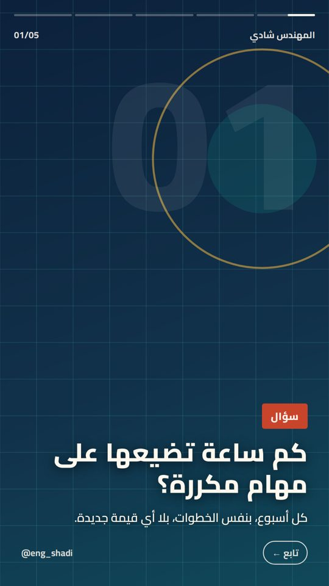

▶ فيديو · 5 مشاهد (لقطة الغلاف)
سيُنشر في موعده
كم ساعة تضيعها على مهام مكررة؟
سيُنشر يوم الخميس 22 أكتوبر الساعة 8:00 مساءً على: فيسبوك وإنستغرام وثريدز.
فيسبوك: ⏳ ينتظر موعده
إنستغرام: ⏳ ينتظر موعده
ثريدز: ⏳ ينتظر موعده
عرض نص المنشور على كل منصة
فيسبوك
كم ساعة تضيعها أسبوعياً في مهام بنفس الخطوات؟ ⏱️
3 خطوات بسيطة تبدأ بها اليوم:
✦ اكتب مهامك المتكررة
✦ أتمت أبسطها أولاً
✦ راجع النتيجة بنفسك
ما أول مهمة ستؤتمتها؟ اكتبها في التعليقات 👇
#أتمتة #إنتاجية #الذكاء_الاصطناعي #تطوير_الأعمال #المهندس_شادي
إنستغرام
كم ساعة تضيعها أسبوعياً في مهام بنفس الخطوات؟ ⏱️
3 خطوات بسيطة تبدأ بها اليوم:
✦ اكتب مهامك المتكررة
✦ أتمت أبسطها أولاً
✦ راجع النتيجة بنفسك
ما أول مهمة ستؤتمتها؟ اكتبها في التعليقات 👇
#أتمتة #إنتاجية #الذكاء_الاصطناعي #تطوير_الأعمال #المهندس_شادي
ثريدز
كم ساعة تضيعها أسبوعياً في مهام بنفس الخطوات؟ ⏱️
اكتب مهامك المتكررة، أتمت أبسطها، وراجع النتيجة بنفسك.
#أتمتة #إنتاجية